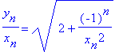

Difference Equations
and
Recursive Relations
Major contributors to the theory of difference equations and recursive
relations during this time period between 0 and 400 were Heron,
Theon
of Smyrna and Diophantus.
Heron
is known for Heron's formula for finding the approximate value of the radical
of a positive number a, given by:
|
|
|
|
We start with two numbers, one is the first side and is denoted by x1,
and
the other is the first diagonal and is indicated by y1.
The
second side (x2) and the second diagonal (y2) are
formed from the first side and diagonal, then the third side (x3)
and the third diagonal (y3) are obtained from the second, and
so on, according to the following formulas:
|
x2
= x1 + y1
|
y2
= 2x1 + y1
|
|
x3
= x2 + y2
|
y3
= 2x2 + y2
|
|
......
|
.......
|
|
|
y1 / x1 = 1, y2 / x2 = 3/2, y3 / x3 = 7/5, y4 / x4 = 17/12, .....
This follows the relation below:
yn 2
=
2xn 2 + (-1) n
= 2xn 2  1
1
If this relation is true, then it implies that:
(yn/ xn)2
= 2 + (-1) n (1 / xn)2
= 2  (1 / xn)2
(1 / xn)2
This equation is known as invariant and is an extremely useful formula in the work pertaining to recursive relations.
Since the value of (1 / xn)2 can be made as small as we would like just by taking n large enough, it seems that the following ratio:

tends to remain near some fixed number for large n.
This procedure for radical 2 can be applied to any positive integer
a.
The general formula now becomes:
|
|
yn 2
= (axn-1+ yn-1 ) 2 =
a2xn-1
2 + 2axn-1 yn-1
+
yn-1 2
axn 2
=
a(xn-1
+ yn-1)2 = axn-1
2
+
2axn-1
yn-1
+ ayn-1 2
By subtracting axn 2from yn 2 we get :
yn 2-
axn 2
= (a2-a) xn-1 2
+ (1-a) yn-1
2
= (1-a) (yn-1 2 -axn-1 2 )
What was achieved in the previous equation is that yn 2- axn 2 has been represented by an expression of the same form. Next we will replace n with n-1 and we will end up with a chain of equalities as follows:
yn 2-
axn 2
= (1-a) (yn-1 2 -
axn-1 2
)
= (1-a)2 (yn-2 2 - axn-2
2
)
= (1-a)3 (yn-3
2 - axn-3
2
)
………..
yn 2-
axn 2
= (1-a)n-1 (y1 2
-
ax1
2
)
Therefore we get:
(yn / xn
)2
= a + [(1-a)n-1 (y1 2
- ax1 2
)]
/ xn 2 n>2
One example of this can be shown through the discussion of radical 3. If we allow x1= 1 and y1= 2 to be the initial side and diagonal numbers, then we arrive at the solution:
(yn / xn
)2
= 3 + ((-2)n-1 ) / xn 2
n>2
Diophantus was responsible for using recursive relations to solve the Diophantine equations. Diophantus was not the first person to solve indeterminate problems of second degree. These problems were a common type of mathematical recreation long before his time. Aryabhata and Brahmagupta were two people who heavily contributed to the study of indeterminate equations, which was Diophantus's favorite subject. Aryabhata and Brahmagupta repeated many of Diophantus's problems however their approach was different. Today, in honor of Diophantus, any equation with one of more unknowns that is to be solved for integral values of the unknowns is called a Diophantine equation.
Diophantus proved that the linear diophantine equation ax + by = c has a solution if and only if d/c, where d = gcd (a,b). He knew that there were integers r and s for which a = dr and b = ds. If a solution of ax + by = c did exist, so that ax0 + by0 = c fo a suitable x0 and y0, then:
c = ax0 + by0 = dr x0 + dsy0 = d(rx0 + sy0)
which simply states that d/c. Conversely, we assume that d/c, say c = dt. Now, integers x0 and y0 can be found satisfying dax0 + by0 . When this relation is multiplied by t, we get:
c = dt = (ax0 + by0 )t = a(tx0 ) + b(ty0 )
Therefore, this diopantine equation ax + by = c has x = tx0 and y = ty0 as a particular solution.
There is a theorem that takes this a step further and states that if x0, y0 is any particular solution of this equation, then all other solutions are given by:
x = x0 + (b/d)t y = y0 - (a/d)t
for some integer t.
See also Monkey
and Coconut Problem and DiophantineEquation